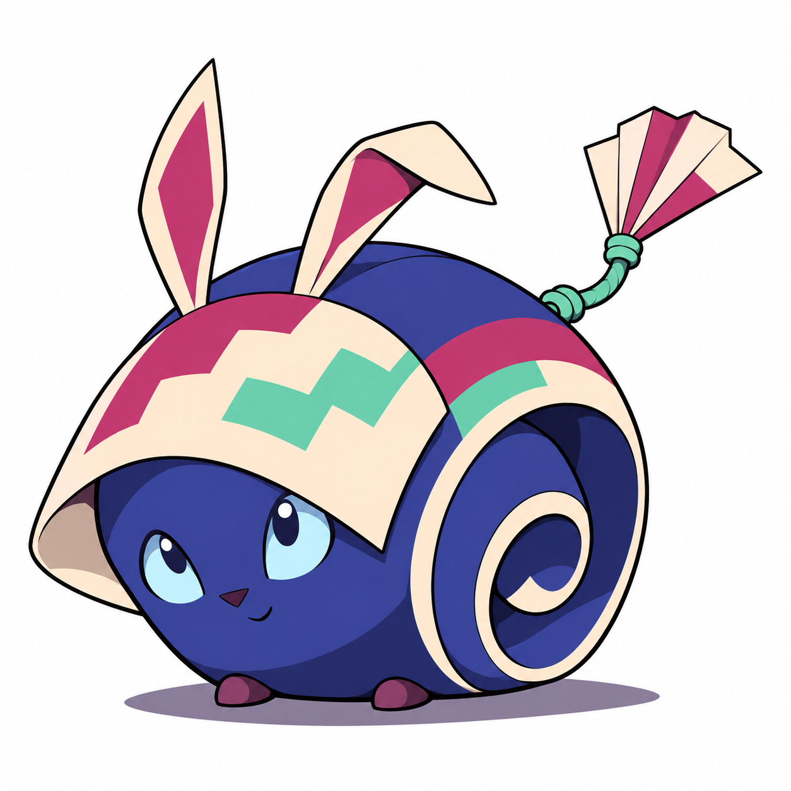
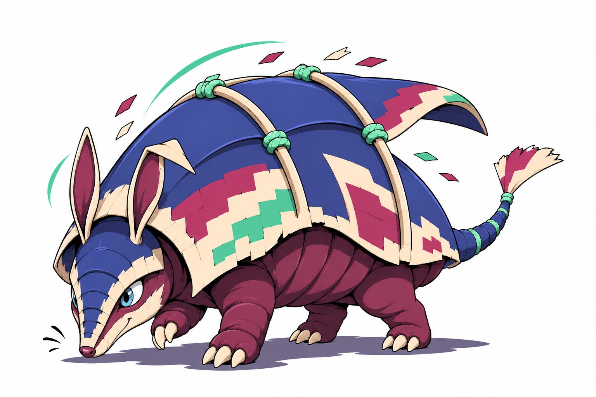
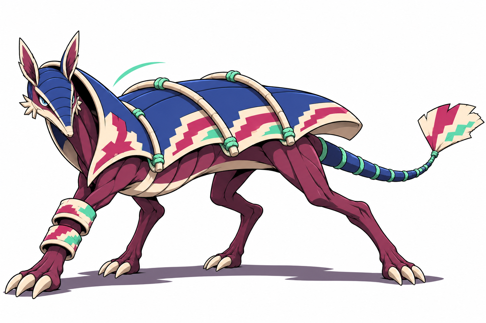
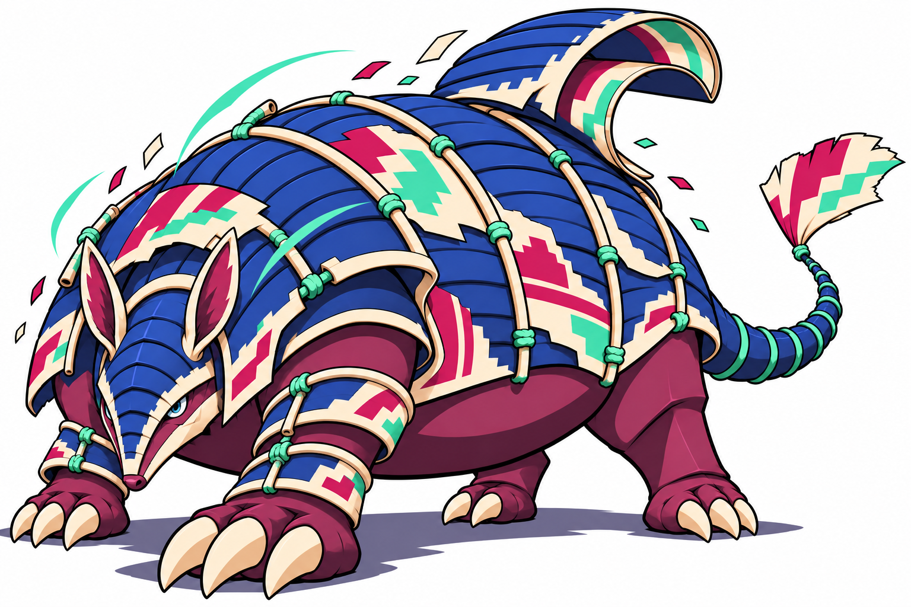

BobimBebê · I CafifaComeça enrolado no próprio papel, aprendendo a abrir seu abrigo para observar o mundo.Um rolo de cartaz vivo, rosto e corpo integrados, duas abas auriculares e pequenos pés; olhos azul-gelo.Brief
TatimboCriança · II PipaAbre o rolo num teto flexível e começa a explorar, farejando e cavando com as primeiras garras.Tatu pequeno de quatro patas sob uma cobertura flexível de cartaz; focinho afilado e uma orelha dobrada.Brief
TrancascoJovem · III ArraiaAprende a deslizar as placas para cobrir um lado do corpo enquanto mantém mobilidade para interceptar.Corpo esguio de pescoço e pernas mais longos, cobertura rasa em placas largas e proteção em um antebraço.Brief
TrancouraAdulto · IV PandorgaPropõe-se que domine a articulação da couraça para bloquear passagem e proteger quem está atrás.Tatu pesado de quatro apoios, couraça-portão segmentada, rolo dorsal, garras grandes e olhos azul-gelo.Brief